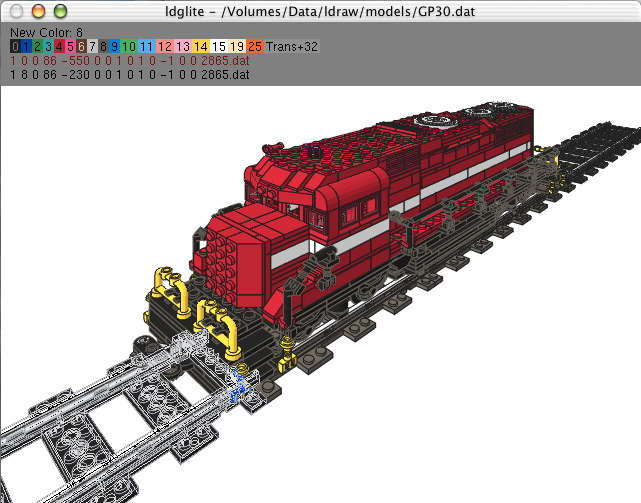
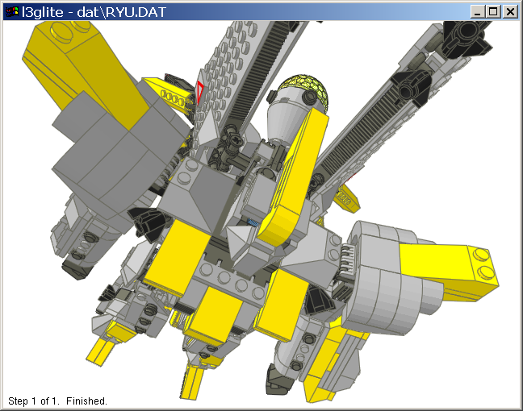
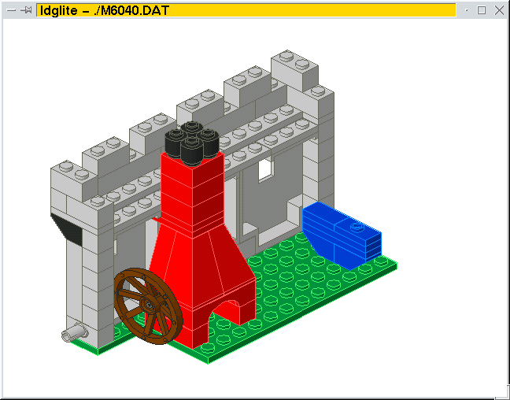
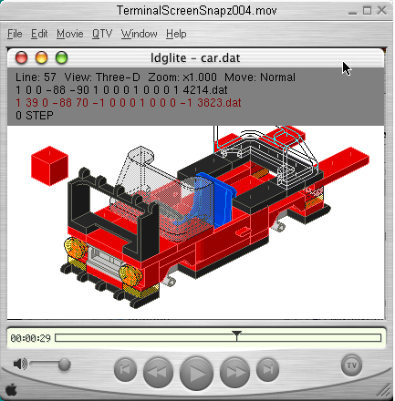

|
Ldglite:
Create, edit, and view LDRAW models.

What is ldglite?
Ldglite is a program that lets you
view and edit Lego brick models stored in LDRAW format. It was created by
connecting the LDLite
DAT file parser to an OpenGL
rendering engine, making it portable to other operating
systems. Along the way the L3 parser from L3P and a few
nifty features from other DAT file viewers such as L3Lab were
added or emulated. Most recently, an LEdit
emulation mode was added. This gives you the ability to create and
edit models in ldglite in addition to the viewing capabilities. The
LEdit mode has several extensions including a hose maker that can also
be used to generate minifig chains.
Another new feature is the ability to function as a cheesy scene modeler for l3p and POV. Several internet sites use
ldglite as a scripted offscreen renderer, generating many pictures
of ldraw parts for inventory lists and such. Possibly the most important
feature of ldglite is that all of the source code is available.
My disclaimer:
Because portability is the main focus of ldglite, most folks
will probably feel more comfortable with one of the platform specific
programs available from the
getting started page
at www.ldraw.org.
Of course you'll need the LDRAW parts library for this to
work. If you don't already have it, visit the
getting started page
at www.ldraw.org and install it according to the directions for
your operating system.
Get it here:
The current Windows executable supports LDrawIni and LPub3D search paths: ldglite_1_3_1_win.zip
This is the same but with -2g2x hardcoded for prettier offscreen rendering in LPub: ldglite_1_3_1_2g2x.zip
Or try the previous release: ldgliteexe1_2_6.zip
A Mac OS-X Universal disk image: ldglite1_3_1.dmg
Or the previous release: ldglite1_2_3.dmg
A retro (untested)
Mac OS-X 10.3 disk image.
Just for fun, here's a
64bit linux executable.
You can also browse the current source code on the
ldglite project page.
Installation:
Mac OS X installation instructions can be found
here.
The installation instructions for other Operating Systems seem to have
vanished from the internet. I'll have to resurrect them someday...
The rest of this is really old. Please ignore:
An MSDOS executable:
ldglitedos0_9_5.zip
and a DOS extender.
A Mac OS 8-9 executable: LdGLite.sit.
Mac OS 8-9 source and project files: LdGLite_source.sit.
Mac OS 8-9 installation notes can be found
here.
Change Log:
To do list:
Compile your own :
So far I've used the Mingw32
version of the GNU compiler, or Visual C++ 6.0 to compile it for
Windows95. I used the Mingw32 version that links with CRTDLL.DLL
instead of MSVCRT.DLL. Apparently using the other DLL causes problems
compiling. I'll have to look into that someday. I've also compiled it
with gcc and Mesa for Linux.
Windows version:

For Mingw32 you also need the glut DLLS and the
gl header
files. I got these dlls from http://www.xmission.com/~nate/glut.html
and I can't remember where I got the gl headers files. Perhaps here GLUT for Mingw32 or here OpenGL and GLUT for Cygwin.
Oh yeah, the makefile stinks. But I patched it up a bit in version 0.7.2.
Now you should be able to just type make in the ldglite directory
and it will make both ldglite and l3glite with png support.
Just for the heck of it I tried to build it in Visual C++ 6.0
and it actually worked. So if the GNU compiler scares ya, you can
still try it out. I just followed these directions
for making a GLUT project in Visual C++ and added the .c source files
from the mingw32 version above. You can just use
the ldglite or l3glite project files already included in the zip file. Just
follow the first part of the directions above to install the GLUT dlls
and include files where Visual C++ likes them, then skip the rest of
the instructions that tell how to make the project files. Note: The
project files are currently out of date since I don't have access to
Visual C++ right now.
By default the windows versions look for the LDRAW dir at
c:\legos\ldraw. You can override this by setting the environment
variable LDRAWDIR. Yeah, I know this is a step backwards for ldlite
users, but it's portable. As of version 0.7.2 you can skip this
in windows if you have the ldraw.ini file from some other LDRAW
type program.
Linux version:

Check the readme.txt in the
zip file for more information about building the Linux version. You
should be able to build with just a make -f makefile.linux in
the ldglite directory. As of version 0.7.2 l3glite is just a softlink
to ldglite. If you have trouble with the png support try deleting
z*.h and png*.h from the ldglite directory. If that doesn't work then
check the notes in makefile.linux to try a build without png support.
My copy of Mandrake 6.1 didn't seem to make all the soft links for the
Mesa GL libraries so I had to link them by hand. See readme.txt.
For linux I set all file operations to lowercase DAT
filenames. When I unarjed the ldraw DAT file archives in linux they
came out in lowercase, so that's what I'm going with. You can set the
environment variable LDRAWDIRCASE to UPPERCASE if for some reason
you prefer uppercase filenames. I think they're more work. The ldraw path
defaults to /usr/local/ldraw. You can override this with the LDDRAWDIR
environment variable. Your ldraw path probably doesn't match if you only
get a blank window. Directions for automatically viewing DAT files from
lugnet with Netscape Navigator are also in the
readme.txt file.
Mac OS X version:
Since Mac OS X is BSD with a candy coating, the linux code worked fine
after a few small changes. You should be able to build with just a
make -f makefile.macx in the ldglite directory. I had to remove
the png support for now until I get around to building libpng on OSX.

Thanks go to:
Paul Gyugyi for the supplying the source to ldlite and encouragement
when this was at version 0.1.
Todd, Steve, Fredrick, and Rui for their help with version 0.2.
Erik and Andrew for doing the Mac versions.
Lars for supplying the code for L3 parser.
Leo for sending code for 8bit BMP files.
Chris Daelman for the hose generator and minifig modeler code.
Jacob for writing the linux installation instructions.
Chris and Tom for producing the OSX installation instructions.
All the Mac users who did most of the beta testing (I don't have a Mac).
Everyone on www.lugnet.com/cad/.
The cause of all this madness:
This stuff used to be LDLite 1.6
before I got my hands on it.
Links:
Mesa3D Homepage
Glut Homepage
PNG Homepage
zlib Homepage
www.ldraw.org
The neat mecha pictured above came from Karim's website.
The GP30 was created by Christopher Masi using ldglite on OS X.
The M6040.DAT file was posted to
Lugnet Cad Models by Jonathan Wilson.
Comments:
Suggestions, enhancement requests, bug reports, and source code
can be posted at LDraw.org
|
|